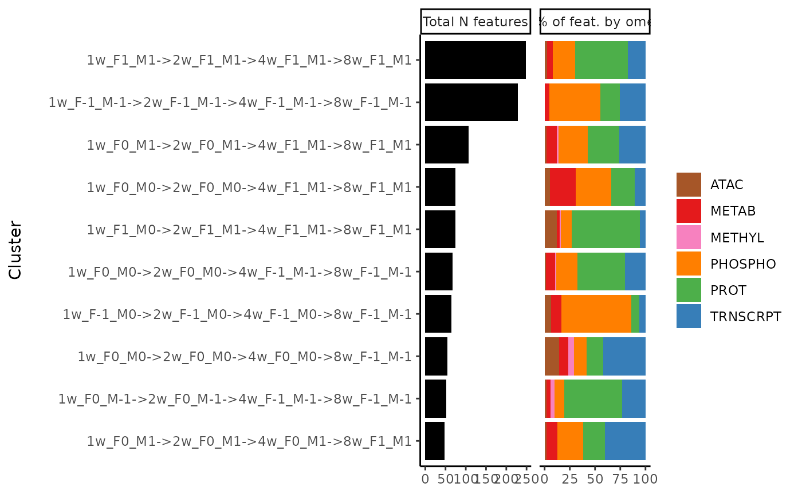

Plot feature composition of clusters
Source:R/bayesian_graphical_clustering.R
plot_features_per_cluster.RdPlot number of features in each cluster and fractions of features that belong to each ome and tissue.
Arguments
- cluster_res
Either a data frame or a list of lists. If a data frame, it needs at least two columns: "feature" and "cluster". The "feature" column should be in the format 'MotrpacRatTraining6moData::ASSAY_ABBREV;MotrpacRatTraining6moData::TISSUE_ABBREV;feature_ID'. If a list of lists, each sublist must be named with the cluster name (character string), and the values must be features in the format 'MotrpacRatTraining6moData::ASSAY_ABBREV;MotrpacRatTraining6moData::TISSUE_ABBREV;feature_ID'.
Value
ggplot2::ggplot() object
Examples
# Get top 10 largest paths, nodes, edges in gastrocnemius
# Exclude additional 8-week nodes
clusters = extract_tissue_sets("SKM-GN", k=10, add_week8=FALSE)
# Select paths only
clusters = clusters[grepl("->", names(clusters))]
# Plot distribution of features
plot_features_per_cluster(clusters)
